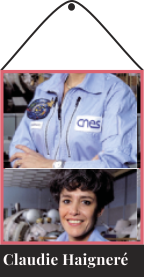
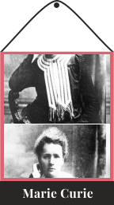
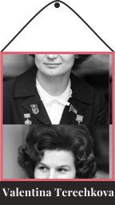

GALERIE
Novatrice du féminisme français. Elle a publié les déclarations du droit de la femme en 1791.
Première et seule femme française à être allé dans l’espace et dans l’ISS
Mathématicienne à la NASA qui a permis de calculer les trajectoires des fusées de plusieurs missions malgré les discriminations en tant que femme noire
Une des plus grandes scientifiques de l’histoire avec d’importantes découvertes en radiologie. Elle a obtenu 2 prix Nobel.
Première femme à être allé dans l’espace en 1963
femme française qui participe à la découverte du VIH. Elle a également reçu un prix Nobel de physiologie ou médecine.